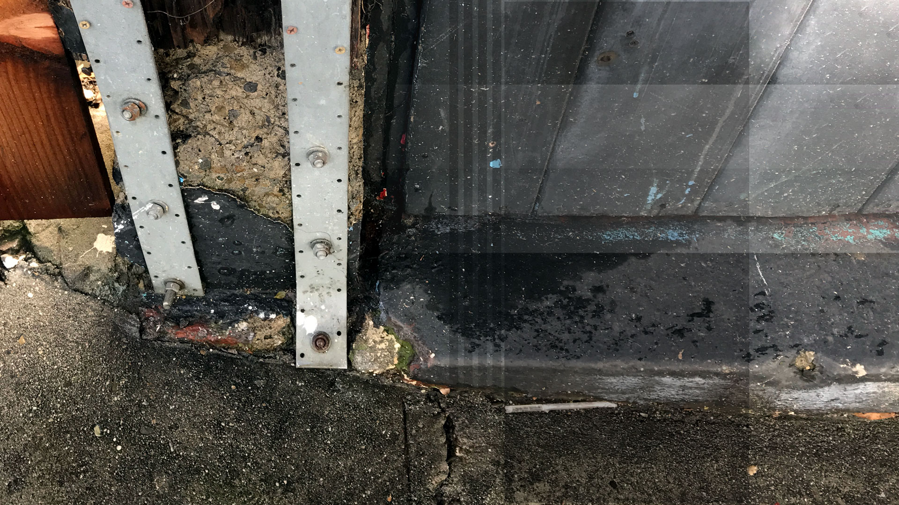

Confidence
I fight for love of brother / Your friends fight one another / You can't see 'cause your head's up your ass / And just in case you think you're bad
I crush your rush / I rule you fool / Immovable stone in your world of weak—I speak:
You, you think you own / I take away / Take it with me
You, you think you own / I took away / Make it my own
– Regular People (Conceit) by Pantera (1992)
Violence was security to me. It kept me safe in high school. At heavy metal shows I kicked, pushed and shoved my way to a bloody peace. The mosh pit was full of likeminded youth. Each assault was an opportunity to feel. [1,2]
At school, friends would ask, "How are you?" and I would respond honestly—with a thorough assessment of my gastrointestinal distress. They would grimace and turn away, so I learned the pat response, "I'm fine." Each time I said this, I knew I would be back at the doctor's office soon.
I was a research subject every week. Nurses drew my blood. Doctors inserted devices and pressed cold fingers on my stomach. They asked, "Where does it hurt?" and it was humiliating. Often I held onto the pain and said nothing. What they didn't know couldn't hurt them.
My habit grew as an adult. I ignored instinct and pushed away desire. Friends, relationships, jobs all seemed less important than disappearing. I treated the workplace as performance art and when it felt like I had any success, I left. I quit in fear of what would happen next.
In my mid-thirties, my father and I visited Sweden. We stayed at a friend's apartment for a month. We saw cathedrals, parks and bridges. We bathed in the fading Midnight Sun. I took photographs at night and I worked for a startup back home, practiced yoga and went sight-seeing during the day. It was exhausting. *
My father's birthday was that month and we went out for dinner with our friend. For days, I'd been tired. Every move at dinner felt hopeless. I could barely drink water. We were at a restaurant, but even so I laid in my father's lap. I was certain I was dying and that it was the best thing ever. As I reached for my water on the table, I felt joyful. Peaceful.
A moment later, I woke up with my face against the table. Not dead, I was covered with dark blood and fluid. I'd vomited on the table (and my shoes). We waited for an ambulance to take me to the emergency room. They washed me up and let me go back to the apartment. That night, I fainted on the floor. We returned to the hospital and they pumped my stomach before admitting me. Doctors transfused two pints of blood to treat my bleeding ulcer.
My father came to see me every day. He was terrified and so was I. But even in the hospital I was occupied with testing my strength. I continued doing yoga and tried to ignore his visits. Every time the nurse checked on me, I demanded to know my test results. She would declined. I was certain something was lost in translation, so I insisted. Every nurse I spoke to refused to share my test results, but kept bringing me fruit juice and vegetables when I requested. My job was to stay put, eat and sleep. I was there for four days. **
The morning before I left the hospital, I took a walk. Shuffling down the hall in my robe and booties, I asked my nurse how I could go outside. She pointed to the elevator. I was bemused and took it to the ground floor.
Walking slowly, I passed hospital staff. I was certain they would report me for leaving my room. Instead, they kept an eye on me. There was a bench on the wall every ten feet in case I got tired. And I was.
Outside, I sat on a bench in the garden. It was cold but beautiful. Pink roses glistened in the morning fog. I felt lucky to be there. Lucky to be alive. I felt a warmth at the hospital I hadn't that whole month. During my trip, I complained that nobody in Sweden makes eye contact in the supermarket. Yet when it came down to it, the hospital staff showed up for me in a way that I was unable to do for myself. [3,4]
They showed me that I could trust myself. Without fuss, the hospital staff reminded me that I am supported by others. It was just as possible I could have seen myself as isolated and alone. I frequently feel that way when I'm sick. But I have friends and I have family. People support me. Love and friendship surrounds me. It gives me the confidence I need to support myself and the ones I love.
- References
-
[1]
Waking the Tiger: Healing Trauma
by Peter A. Levine with Ann Frederick (1997).
Old habits are hard to break, but if the strategy you've learned for feeling any emotion at all is to inflict pain, it will be one you'll repeat. Peter Levine gives an excellent guide on how to move safely from repeating old, painful patterns to supportive ways of caring for yourself. - [2] In an Unspoken Voice: How the Body Releases Trauma and Restores Goodness by Peter A. Levine (2010).
-
[3]
The Charisma Myth: How Anyone Can Master the Art and Science of Personal Magnetism
by by Olivia Fox Cabane (2013).
The nurses that cared for me demonstrated the kind of confidence that I strive for today. By being both attentive and firm in their care for me they demonstrated the kind of "power and warmth" that is perceived as charisma as outlined in this book. Thanks to Dave Logan for sharing this connection in his work on Tribal Rainmakers. -
[4]
Tribal Leadership: Leveraging Natural Groups to Build a Thriving Organization
by Dave Logan, John King and Halee Fischer-Wright (2008).
Shortly after my experience in Stockholm, I purchased this book. It's influenced how I think about group dynamics ever since. At the time, I was frustrated by a group collaboration where I seemed to be resolving arguments more than I wished. Though it was natural for me to act as a go-between in that group, I was reaching my limit. I bought this book to help.
Among many useful insights in this book is the idea that there are "levers" you can use to help people that are otherwise concerned with their own survival rather than getting along with others. Though the book is set in a business context it applies to life in general. When I was in the hospital, I was scared and defensive. I wanted people to care for me and I wanted them to leave me alone—in short, I had a conflict of needs. My nurses handled this effortlessly. In four days, they helped me move from being a person who was angry and speaking to few people, to a person that spent time with others and made my own lunch. This support and how it changed me was subtle but effective.
Thanks again to Dave Logan and to Nickie DeTolve at CultureSync for helping me collect resources to share in this article. They've posted a free audio book of Tribal Leadership, if you want to learn more.